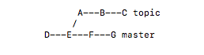
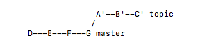
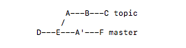
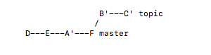
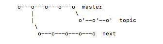
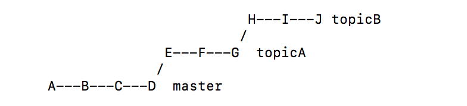
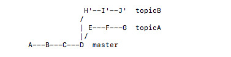

---
layout: post
title: 详解Git里的Rebase操作
date: 2018-08-10 23:34:15.000000000 +09:00
tags: iOS技术
前言:
用了一段时间的git，基础命令已经使用的比较熟练，在回顾时，发现平时使用git rebase比价少。找了些文章，都是支离破碎的。最终自己从命令行的文档里找到了平易见人的解释。
下面跟着文章的实践思路一步步走完，会有异想不到的收获
在命令行里git rebase --help 可以查看英文版本的解释
下面将对这个英文的文档做理解输出
假定下面历史记录

当前在topic分支上
执行
git rebase master
或者
git rebase master topic
将得到如下结果

NOTE:git rebase master topic 形式是git checkout topic ,git rebase master两条命令的相继执行。
如果upstream分支(在这里举例的就是master分支,因为topic从master分支开分支而来)已经包含一个改变的提交，这个提交将会跳过。（A,A`是相同的改变，不同的提交信息）

执行 git rebase master
将会得到

下面将介绍如何使用rebase --onto将一个分支的base迁移到另一个分支。
假设现在是如下历史记录

我们要得到如下结果

执行 git rebase --onto master next topic
另一种使用

执行 git rebase --onto master topicA topicB
（我对这条的理解，checkout到topicB,取topicA到topcB多出来的变更，以master为新的基础）

另一种使用
假设当前历史记录
执行 git rebase --onto topicA~5 topicA~3 topicA
得到如下结果
在rebase操作时，如果有冲突，git rebase将停止让你解决冲突，解决后git add ,在执行git rebase --continue,直到没有冲突为止。想取消rebase可以执行git rebase --abort;
从上面的总结，可以看出，rebase,其内在含义就是变基础（起点）。有两个参数，一个是”找到变基的提交“。另一个是指“定变基的到哪”。